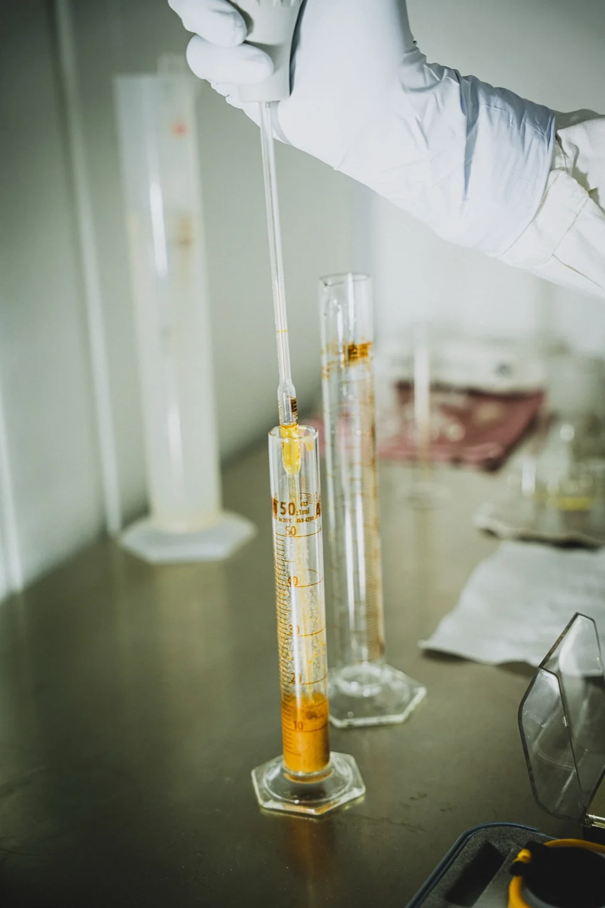
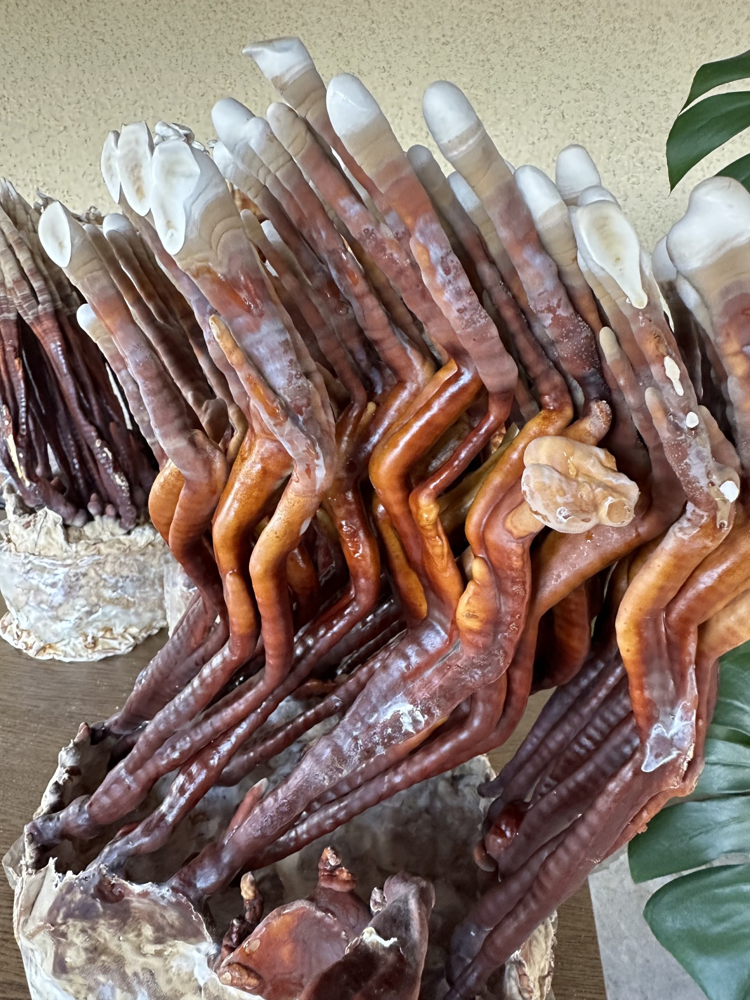
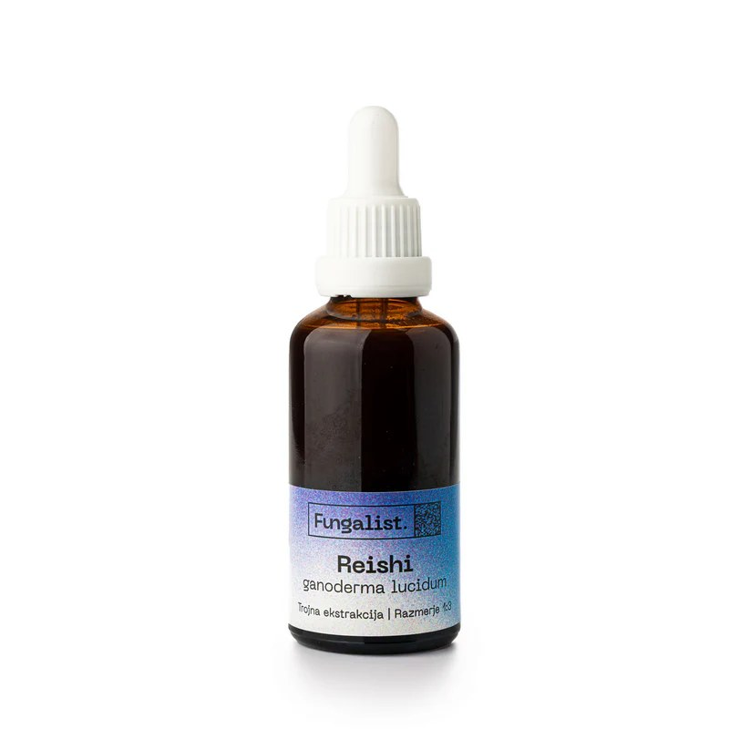
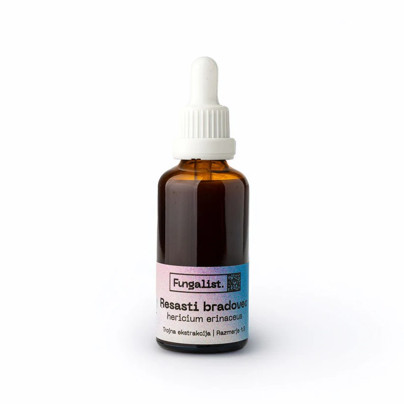
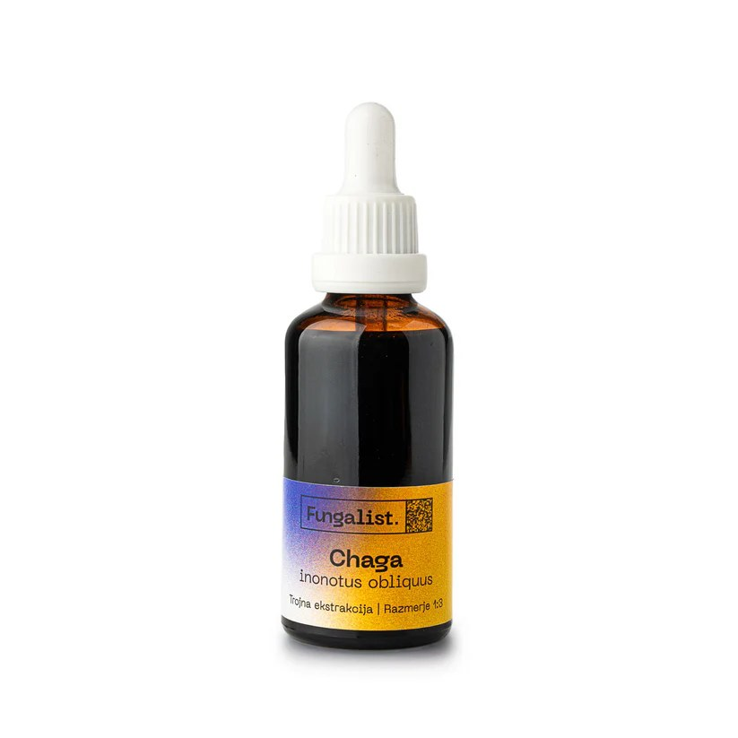

Storitve

Gojenje Reishi (Ganoderma lucidum)
Ostale storitve
Kaj vključuje postopek
- Sprejem in priprava surovine: prevzem, QC kontrola vlage, dosuševanje do 8 % vlage, mletje v homogeno frakcijo.
-
Trojna ekstrakcija v šaržah:
- etanolna ekstrakcija (triterpeni, hericenoni, fenoli)
- vročevodna ekstrakcija (≈ 80–90 °C, polisaharidi)
- tlačna ekstrakcija (≈ 120–130 °C, visokomolekularne spojine)
- Združitev frakcij in formulacija končnega ekstrakta (alkoholna ali glicerinska tinktura).
Tehnološki poudarki
- Ultrazvočno podprta ekstrakcija z nadzorom temperature.
- Visoka razmerja topilo : surovina za boljši izplen ekstrakcije.
- Nizkotemperaturno vakuumsko koncentriranje.
Vhodni material
- Reishi (Ganoderma lucidum) iz lastnega gojenja (micelij → plodišča).
- Druge vrste medicinskih gob po dogovoru – možna je tudi obdelava surovine naročnika.
Topila in formulacije
- Food-grade etanol, RO voda in rastlinski glicerin Ph. Eur.
- Možnost alkoholne ali brezalkoholne (glicerinske) različice.
- Po potrebi dodatek sončničnega lecitina (stabilnost, biorazpoložljivost) in vitamina C (antioksidativna zaščita).
Standardizacija in kontrola kakovosti
- Določanje % suhe snovi, % etanola, % glicerina, gostota in organoleptike.
- Po potrebi: mikrobiološke analize in težke kovine (Pb, Cd, Hg).
- Osnovni stabilnostni testi končne formulacije.
- Interni QC: za vsako vrsto gobe definirani minimalni cilji suhe snovi (glej tabelo spodaj).
Skladnost in dokumentacija
- Izvedba v skladu s HACCP / GMP pristopom.
- Vzpostavljen sistem SOP / ZOP in popolna sledljivost lotov.
- Proizvodnja poteka v registriranem trošarinskem obratu za etanol, z zagotovljeno sledljivostjo in skladnostjo z zakonodajo.
Prisotnost usedline v tinkturah medicinskih gob — znak visoke koncentracije, ne napaka
Naše tinkture namenoma niso filtrirane do popolne bistrosti, ker bi s tem odstranili del učinkovin. Naravna usedlina je zato normalen in zaželen pojav ter znak visoke koncentracije bioaktivnih spojin, ne napaka v proizvodnji.
Vse posamezne faze (alkoholna in vodne ekstrakcije) so najprej temeljito filtrirane. Do usedline pride šele po združitvi vodne frakcije, bogate s polisaharidi in β-glukani, ter alkoholne frakcije, ki vsebuje triterpene in druge v alkoholu topne spojine. Ker so polisaharidi in β-glukani v alkoholu slabo topni oziroma netopni, se del njih naravno izobori – na dnu se pojavi oborina / usedlina.
V tej naravni usedlini so praviloma prisotni predvsem vodotopni polisaharidi in β-glukani, ki izvirajo iz vodnega dela ekstrakta. To velja pri vseh vrstah, tudi pri Reishi, kjer se po združitvi vodne in alkoholne faze pogosto pojavi drobna oborina teh spojin, le da je je manj kot pri vrstah z višjim deležem suhe snovi (npr. resasti bradovec).
Tinkture, ki nimajo skoraj nobene usedline, praviloma ne vsebujejo veliko polisaharidov ali pa so filtrirane/razredčene do te mere, da je delež teh spojin nizek.
Pri različnih vrstah gob se delež suhe snovi in s tem količina usedline razlikujeta. Minimalne in tipične vrednosti suhe snovi v naših tinkturah so:
| Vrsta | Minimalna suha snov (%) | Tipična suha snov v praksi (%) | Značilnost |
|---|---|---|---|
| Reishi (Ganoderma lucidum) | ≥ 4 % | ≈ 5 % | manj izrazita, a prisotna usedlina polisaharidov in β-glukanov |
| Chaga (Inonotus obliquus) | ≥ 6 % | ≈ 8,5 % | zmerna usedlina, bogata v melaninih, betulinu in polisaharidih |
| Resasti bradovec (Hericium erinaceus) | ≥ 11 % | ≈ 14 % | obilna usedlina zaradi zelo visoke vsebnosti polisaharidov |
Gojenje Reishi
Antler oblika Reishija – naravna odzivnost in višja aktivnost
V nadzorovanem okolju z omejenim pretokom zraka, povišano koncentracijo CO₂ in zmerno osvetlitvijo Ganoderma lucidum praviloma ne razvije klobuka, temveč zraste v razvejano, rogovilasto (antler) morfologijo [2], [1]. Ta morfologija je metabolno zahtevnejša in je povezana s povečano biosintezo triterpenov (ganodermičnih kislin) ter pogosto tudi višjo ravnijo β-D-glukanov [3], [2].
Eksperimentalno je bilo pokazano, da povišan CO₂ in omejen kisik povečata sintezo ganodermičnih kislin in prispevata k nastanku antler tipa plodišč [1]. V novejši raziskavi so iz antler oblike G. lucidum izolirali sedem novih triterpenov, ki jih v “fan/klobuk” obliki niso zaznali [3]. Dodatno so primerjave izvlečkov potrdile višjo antioksidativno in hepatoprotektivno aktivnost antler izvlečkov [4].
Naš pristop tako posnema naravne stresne razmere, da goba izrazi polni biokemični potencial – rezultat so plodišča z visoko vsebnostjo triterpenov in konsistentna surovina za standardizirane tinkture z visoko bioaktivnostjo.
[1] Wang, J. et al. (2012). Effect of CO₂ concentration on morphology and triterpenoid synthesis of Ganoderma lucidum. Scientific Reports, 2, 905.[2] Chen, L. et al. (2018). Morphological differentiation and triterpenoid accumulation in antler-type G. lucidum. Mycosphere, 9(2), 290–301.
[3] Li, Q. et al. (2024). New ganoderic acids from antler-type G. lucidum fruiting bodies. Phytochemistry Letters, 67, 150–158.
[4] Kim, S. et al. (2015). Comparative antioxidant and hepatoprotective effects of antler- and fan-type G. lucidum. International Journal of Medicinal Mushrooms, 17(3), 259–267.
Botanične ekstrakcije
Sterilizacija gojitvenih substratov
Pristop — trojna ekstrakcija in vakuumsko koncentriranje
Iz vsake gobe iztisnemo maksimum — ponovljivo, sledljivo in nežno do učinkovin.
Korak 1
Trojna ekstrakcija
Etanol → vroča vodna → tlačna vodna. Vsaka faza cilja drug spekter spojin, zato dobimo celovit izvleček.
Korak 2
Velika količina topila
Velika količina topila prepreči hitro nasičenje, ohranja prenos snovi in poveča izplen ekstrakcije.
Korak 3
Ultrazvočna podpora
Ultrazvok z mikrokavitacijo razrahlja matriko gobe, pospeši in poveča izplen ekstrakcije.
Korak 4
Vakuumsko koncentriranje
Topila odstranimo pri nižjih temperaturah, zato bolje ohranimo občutljive spojine ter naravno aromo in barvo.
QC 1
Kakovost
Interni QC na surovinah in končnih izdelkih: suha snov, gostota, ekstraktibilni delež in sledljivost serij.
QC 2
Skladnost
Delo poteka po HACCP načelih in GMP pristopu; uporaba etanola je vodena skladno s trošarinskimi evidencami.
Galerija
Reference — Fungalist
Podjetje Fungalist je naš osrednji partner, pri katerem lahko najdete naše tinkture.



Kontakt GoMushroom — laboratorij za ekstrakcije medicinskih gob
Ali te zanima sodelovanje z GoMushroom? Piši mi in na kratko opiši, kaj te zanima (izdelek, surovina, razvoj, veleprodaja ali projekt po meri). Odgovorim hitro in predlagam naslednje korake: kratek klic, dogovor o ciljih, nato priprava predloga (rok, količine, specifikacije) in uskladitev izvedbe.